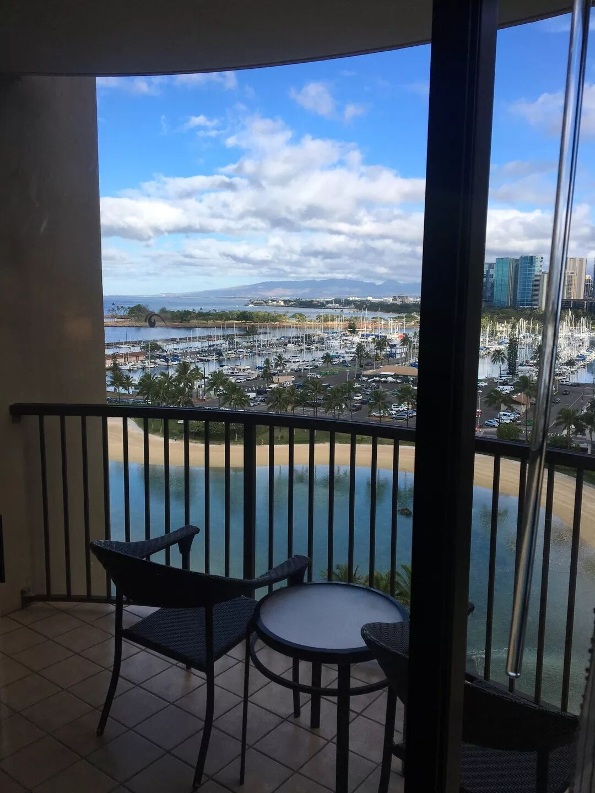
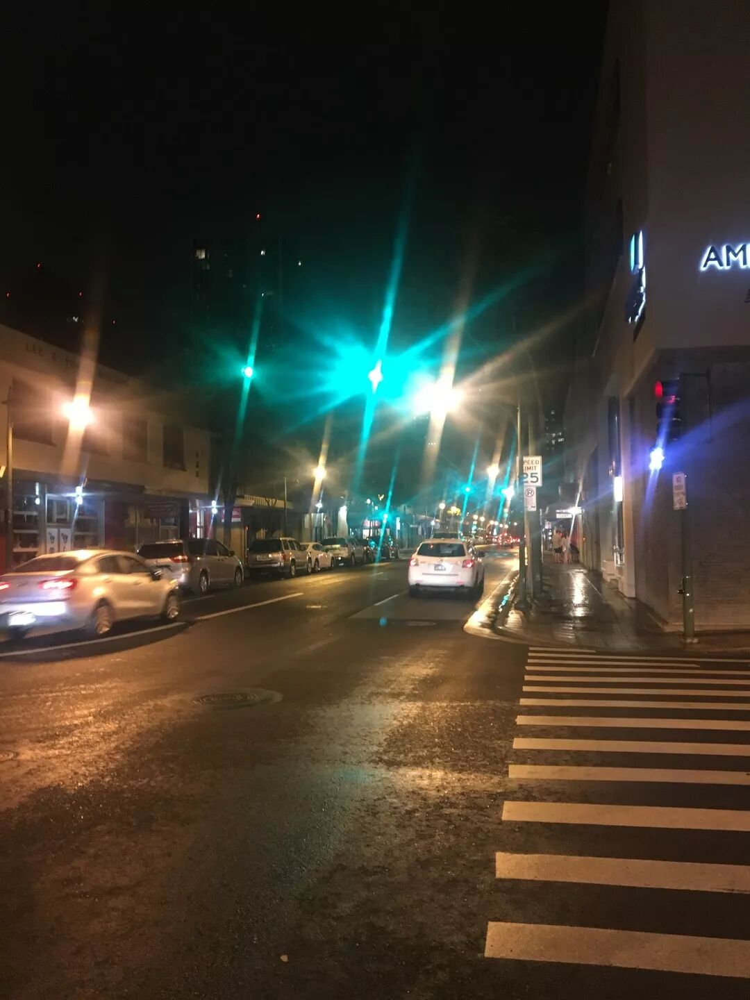
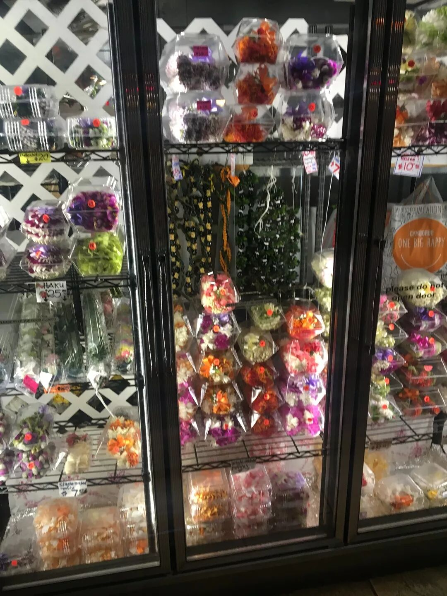
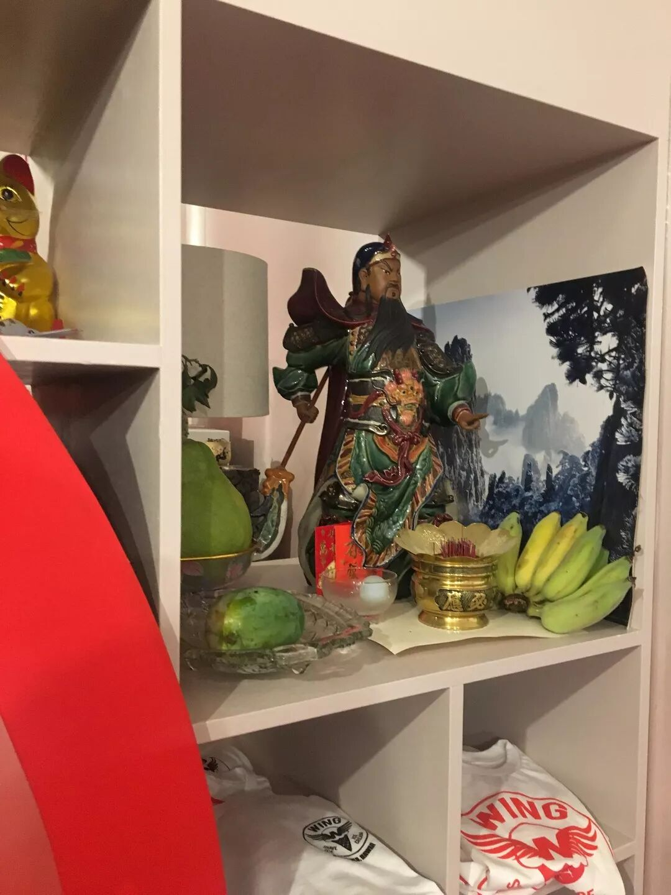
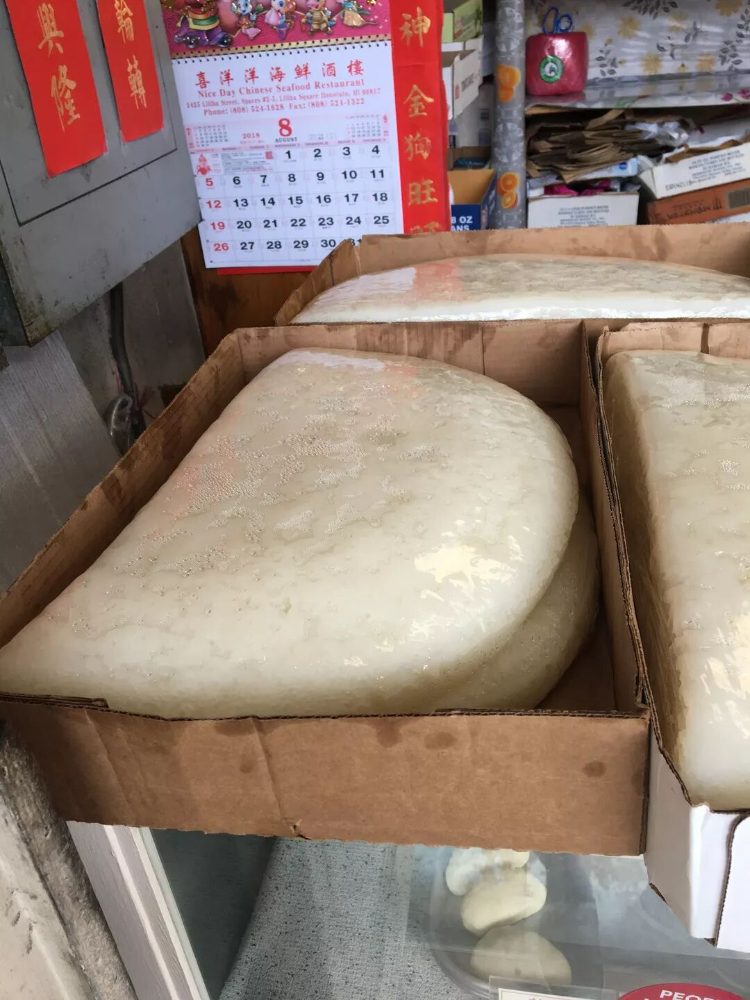
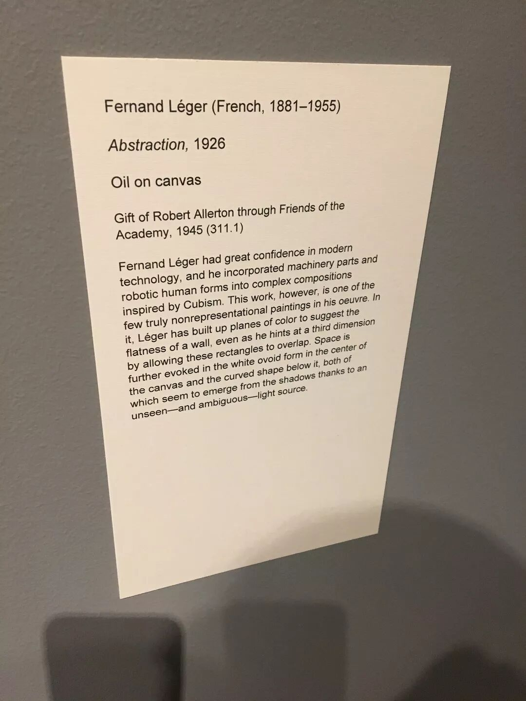
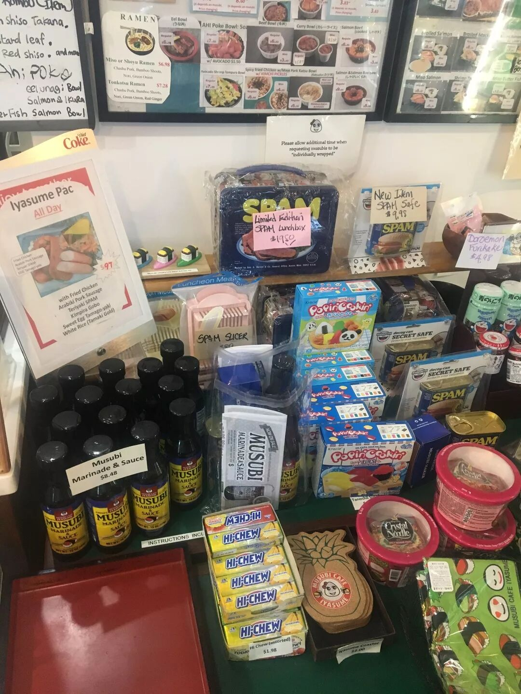
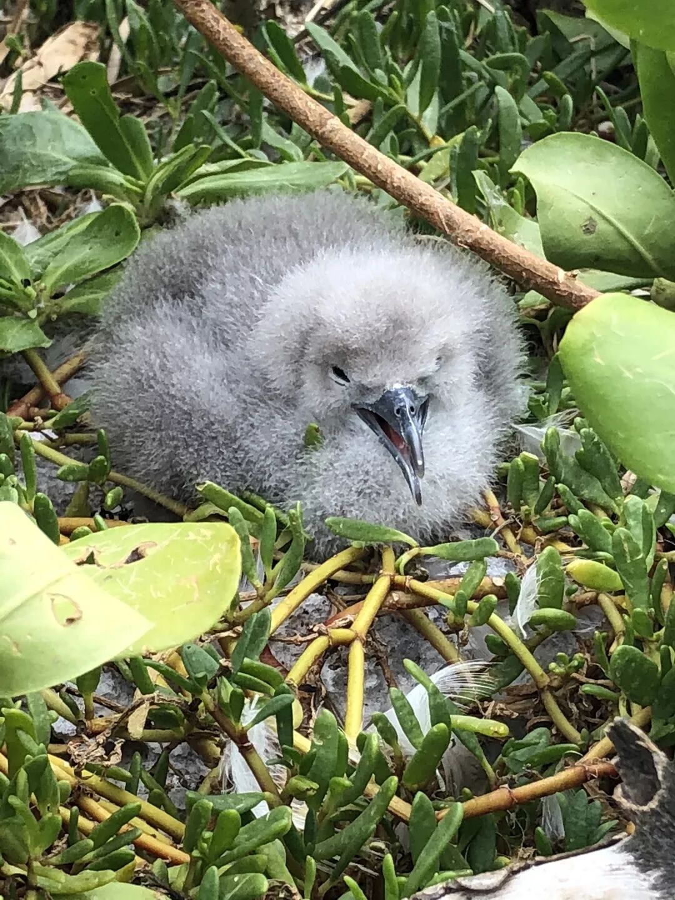
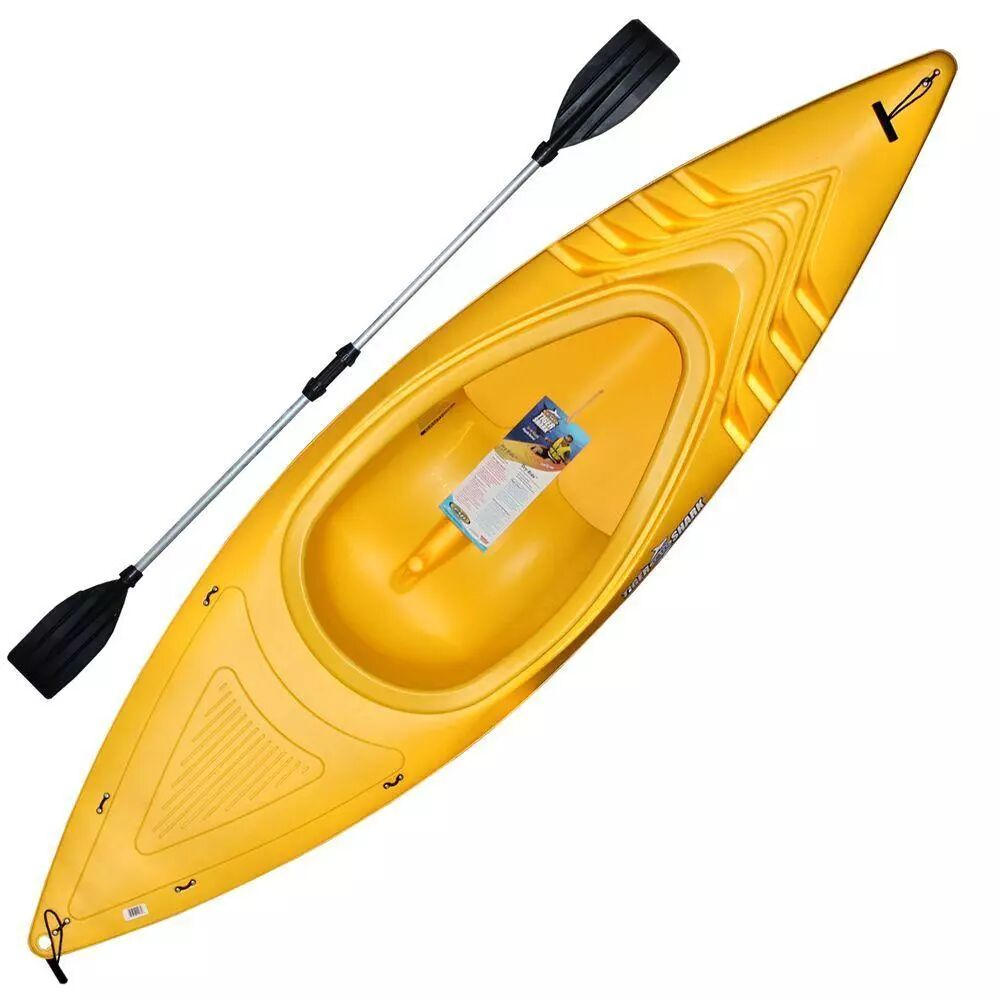

最近请了年假去夏威夷玩，前9天在茂宜岛(Maui)上面跟朋友一起度过，后4天则在欧胡岛（Honolulu）上度过。虽说夏威夷度假似乎有些陈词滥调，真实的夏威夷却的的确确给了我不少惊喜。因为上周在Maui岛上的后半程感冒了，因此拖到今天才写。
Honolulu（檀香山）之初印象
Honolulu（檀香山）是欧胡岛上最繁华的地区，位于欧胡岛的东南面。大部分的宾馆都会在Honolulu市内，靠近Honolulu市南面的Waikiki beach。相比起Maui的原生态，Honolulu给人一种繁华的感觉。市中心的商业之发达，交通之拥堵，比起旧金山也没有逊色多少。
飞抵Honolulu已经是晚上9点了，到了宾馆以后Valet parking已经没有了，在附近兜了半个多小时才找到一个没有停满的停车场。Parking的价格也是我生活过的城市中最贵的，可能是因为正值旅游的旺季吧。
虽说Parking如此之难，租车还是一件非常值得的事情，因为这样子就可以想去哪儿就去哪儿。而且整个欧胡岛除了Honolulu这一块特别繁华，别的地方大部分地方还是类似于旧金山，芝加哥，DC的郊区，没有车基本寸步难行。
Honolulu的中国城
孙中山的中学以及大学的预科班是在Honolulu完成的。他中学就读于Honolulu市内的'Iolani School，大学预科班就读于这里的Oahu College。相比起孙中山，他的哥哥孙眉在这里影响力更大。他的哥哥曾在Maui岛上拥有大片土地，还曾经营过一家移民事务所，专门介绍华工来檀香山做工，被人们称为King of Maui。
也许是因为曾经有大量的华工在这里，Honolulu也有一片不小的区域为Chinatown。夜晚的Honolulu Chinatown显得十分破败，路上行人很少，店门口不时能看到瘫坐在那边的流浪汉。大部分的商铺都关门了，只有不少餐厅还在经营。这些餐厅里面个个人头攒动，让人奇怪他们是如何进入到店铺当中的。

晚上还在经营的还有冰淇淋店以及花店。夏威夷的花店非常有特点，他们会把花精致地编好，然后像甜品一样陈列在冷藏柜里。


第二天早上来吃了早餐，大部分是一些典型的广式点心，加上一些奇怪的变种，比如麻球里面夹着叉烧肉啦，或者是萝卜糕和芋头糕的混合体啦。还有一种从未见过的年糕，过去的时候已经卖完了。

Honolulu的日本人
虽说Honolulu有一个中国城，但是实际上这边占有半壁江山的其实是日本人。不管是宾馆，机场或是旅游景点告示牌，都是上面英语下面日文。平时在街道上，除了西方人，看到最多的就是日本人。

这边的日料非常好吃，我去了一家日料铺子，里面的咖喱牛肉饭，梅子鲣鱼干饭团，火腿肉厚蛋烧便当等等相当美味。

Honolulu的Kayak
所谓的Kayaking，在夏威夷指的是用一种类似于独木舟的塑料小船在大海上航行。欧胡岛的Kailua地区位于岛的东面，是一个不错的Kayak的场所。海岸线目力可及的地方有一个叫popoia的小岛，用独木舟划半小时不到就可以到达。

岛上的雏鸟
以前我在国内也划过不少次船，独木舟给我的感觉与那些经历蛮不一样的。首先由于船很窄很浅，阻力相对小很多，所以在海面上，就算逆着浪，前进的速度也相当快。船内的设计也是尽量让你的发力舒服，船体上有脚蹬的地方，加上一个软的靠背，正好可以像是划船器那样坐着，加上一个两面都可以划的很轻的桨，划起来很轻很省力。因为船很窄很浅，又是在海面上有浪，水很容易进入船中，衣服很快就湿透了。

Honolulu其它的东西
Honolulu还有不少别的好玩的，比如这边Shark’s Cove的浮潜，Art Museum，Diamond Head的Trail。Waikiki beach的购物中心，限于篇幅就略去了。Honolulu如果第一次来的话还是推荐租车，各处都可以看一看。
如果喜欢户外的话没必要住在Honolulu市内，因为户外的大部分地方都在东面以及北面。
如果休闲的话，最好订上Waikiki beach沿岸的Resort酒店，然后就可以躺在宾馆附带的沙滩上玩玩海，晒晒太阳。这种情况的话就不要安排什么活动了，沙滩上就有足够玩的了。